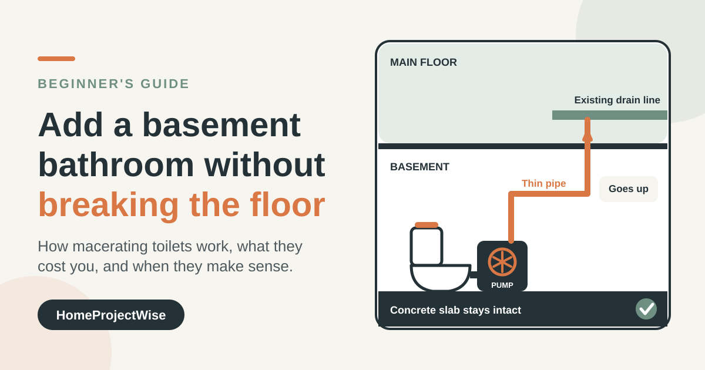
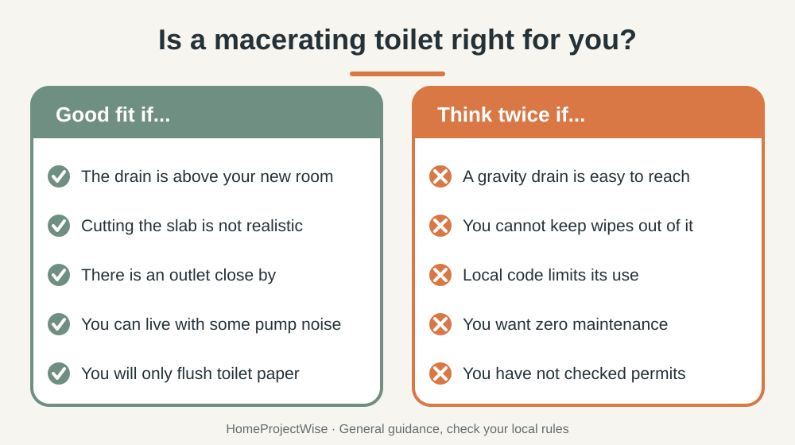

HOME PROJECTS · BATHROOM
Macerating Toilet for a Basement Bathroom: Is It Worth It?
Want a bathroom in the basement, but the drain is in the wrong place? Breaking up a concrete slab is expensive and messy. A macerating toilet is the option many first-time DIYers hear about. This guide explains how it works, what manufacturers actually promise, the downsides, and what to check before you spend money.
Short answer: a small pump grinds the waste and pushes it up through a thin pipe to your existing drain, so you can add a basement bathroom without cutting the slab. It works well if you can connect to a vent, have an outlet nearby and will keep wipes out of it. Check your local permit rules first, and compare real pumping limits, not just marketing numbers.

Disclosure: this article includes one affiliate link, marked as such in section 8. If you buy through it, HomeProjectWise may earn a commission at no extra cost to you. Our advice does not depend on it.
1. What a macerating toilet does
A regular toilet relies on gravity: waste drops into a pipe that slopes down to your main drain. A macerating toilet adds a small pump with a grinding blade behind or beside the bowl. It breaks waste down and pushes it through a narrow discharge pipe, even to a drain that sits above the toilet or farther away than a gravity pipe could reach. That is why it is considered for basements, attics and converted rooms.

2. Is it right for you?
- Good fit: the drain is above your new room, cutting the slab is not realistic, there is an outlet nearby and a vent you can connect to.
- Think twice: a gravity drain is easy to reach, you cannot keep wipes out of it, local code limits its use, or you want zero maintenance.

3. What the numbers really mean
Pumping limits are the claim buyers compare first, and they vary a lot. Saniflo, a long-established maker, lists its SaniPLUS full-bathroom unit at up to 15 feet vertically or 150 feet horizontally, with noise at or below 53 dBA measured at 3 feet and a 4.5 amp draw. Its manuals also say vertical lift and horizontal run trade off: roughly 3 feet of vertical lift counts as about 30 feet of horizontal run.
By comparison, Simple Project states for its 600W pump up to 29 feet vertical and 295 feet horizontal, at roughly 35 to 45 dBA. Those figures are about double the Saniflo ones and come from the brand, not from an independent test. Treat them as unverified until you see the test conditions and the pipe size they assume. In practice, plan your layout to stay well inside conservative numbers.
4. What to compare before buying
- Documented lift and run, and the pipe size used to rate them.
- Compatibility: macerating pumps are designed for rear-discharge toilets, and a matched toilet-and-pump system avoids fit problems.
- Vent connection: check where the unit connects to your vent.
- Noise: a pump is louder than a gravity toilet, even a quiet one.
- Warranty and support: Simple Project lists 2 years on the ceramic and 1 year on the pump. Read the terms and return policy.
- Service access: choose a unit where the pump is easy to reach.
5. The honest downsides
- It needs electricity, so an outlet must be close by.
- The pump makes noise every time it runs.
- Only human waste, toilet paper and water. Never flush wipes, paper towels or hygiene products.
- Pumps can wear out, and a failed pump means no bathroom until it is fixed.
- It is not always cheaper once you add pipes, fittings, venting, permits and labor.
6. Venting, permits and layout rules
Saniflo's documentation states that the unit must be connected to a vent system in line with plumbing codes. It also says to put any vertical lift first and keep the initial horizontal run short (its manual gives 18 inches), and not to turn upward again once the horizontal run has started. Your unit's manual may differ, so follow it. Permit rules and limits on macerating toilets vary by city and state, so ask your local building department before you buy. This guide is general information, not professional advice.
Basements are also humid, so plan ventilation: how to reduce bathroom condensation and how to stop bathroom towels smelling musty cover the basics, and better evening home lighting helps with a windowless room.
7. Basic installation overview
- Choose the location and confirm an outlet, a vent connection and a route to your drain line.
- Plan the discharge pipe: lift first, then horizontal, with the fall your manual requires.
- Set the toilet and connect the pump following the manual.
- Test with water before regular use and check every joint.
- Keep the manual and cleaning instructions.
Hire a licensed plumber for venting and the drain tie-in, and an electrician for the power supply, if local rules or your confidence call for it.
8. Choosing a unit
Options, and how we chose them
We looked at what a beginner needs: documented specs, clear vent and installation instructions, a stated warranty and reachable support.
- An established brand with full documentation. Saniflo publishes data sheets and manuals. We do not earn anything if you choose it.
- A value-oriented brand. Simple Project sells the SNFLEX line, with a 600W pump, a carbon filter and installation instructions on its site. We have not tested it, so read reviews and ask for the manual before ordering.
- A plumber's recommendation. A local plumber can often specify a unit that fits your venting, drain height and code.
9. Common mistakes
- Putting the vertical lift after the horizontal run.
- Skipping the vent or assuming a "cheater" vent is enough.
- Flushing wipes because the package says flushable.
- Buying a toilet that is not compatible with the pump.
- Not checking permits before work starts.
Frequently Asked Questions
Can a macerating toilet connect to a sink or shower?
Many units accept a sink and sometimes a shower or washing machine through extra inlets, but the limits depend on the model. Check your unit's manual for which fixtures it supports and how high a shower base must sit.
Does a macerating toilet smell?
Many units include a carbon filter, but smell is mostly a venting and cleaning issue. A properly vented unit, good ventilation and regular cleaning matter more than the filter alone.
What should never be flushed down a macerating toilet?
Wipes, paper towels, hygiene products and anything the manufacturer excludes, even if the package says flushable. Saniflo, for example, states its units are designed for human waste, toilet paper and water.
Do I need a permit for a basement bathroom?
Often yes. Rules differ by city and state, and some places limit where a macerating toilet may be used. Ask your local building department before you buy or start work.
Can I install it myself?
Many people do the toilet and pump connection themselves, but venting, drain tie-in and electrical work may need a licensed plumber or electrician depending on local rules. Read the manual of the exact unit first.
Sources and last review
Last reviewed: October 7, 2026. Pumping limits and layout rules come from the manufacturer documents below. Simple Project figures are the brand's own claims. Always follow the manual of your exact unit.